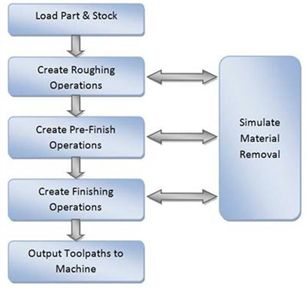

The manufacturing process aims to successively reduce material from the stock model until it reaches the final shape of the designed part model. To accomplish this, the machinist or programmer utilizes a machining strategy.
A typical machining strategy employed in the manufacturing industry is to use larger cutters to perform bulk removal of material early on in the manufacturing process. These operations are called roughing operations. |
This is then followed by operations employing successively smaller cutters removing proportionately smaller amounts of material from the stock model. This is done until the part has a uniform amount of stock left. These operations are called pre-finishing operations. |
This is then followed by finish operations. Here the uniform stock remaining on the part is removed by using a small cutter removing a constant amount of material with every motion to produce the net shape. |
The standard work-flow of MILL module mimics this process and can be represented by the flow chart shown below.  The work-flow of the MILL module mimics the standard production process of material removal |
Part geometry is drawn, modeled or imported into Rhino using the available Rhino tools for use by RhinoCAM MILL. A stock model representing the raw stock from which to cut the part can either be created using the various tools provided in the MILL module or models or imported by Rhino. |
You then determine the machining strategy to be used in manufacturing the part. This can be done by loading a previously saved manufacturing operation sequence or by creating a new one. This manufacturing strategy is represented by a sequence of machining operations in the MILL module. To create a new machining strategy, simply select the tools and the machining operations in sequence and then generate toolpaths. The system automatically records this sequence. This record can be archived as an operation list that can be retrieved for later use. Here is a typical machining strategy: 1.To create a new machining operation, select a tool followed by the type of toolpath to be created. You set the parameters to use for machining and generate the toolpath. 2.A 3D part is typically machined using 3 axis operations. It can be rough machined initially by employing a horizontal roughing operation, followed by a finishing operation. The horizontal roughing toolpath will typically be generated using a relatively large flat end mill or an end mill with a corner radius to efficiently remove bulk of the material from the raw stock. This machining operation could be followed up with another horizontal roughing operation either with the same tool or with a smaller tool to remove more material. 3.The part can then be pre-finished by employing either the parallel finishing operation or the horizontal finishing operation. Pre-finishing and finishing operations typically employ ball end mills with or without a side angle. 4.Finally a parallel finishing operation using a small radius ball tool and employing a fine step-over is then used to finish the part to net-shape. This may or may not be followed by other re-finishing operations to reduce handwork on the part. |
For prismatic parts that have straight walls, it might be more expedient to use 2-1/2 axis toolpath methods rather than the 3 axis methods described above. The strategy followed however will be similar where in bulk material removal or roughing will be performed by a combination of facing and pocketing operations. These will then be followed up with one or more profile finishing operations. It should be noted that for 2-1/2 axis operations it is not necessary to have the complete 3D geometry defined. Curves that represent the sides of the part are sufficient to define the geometry for machining. |
Once all of the operations are completed you can then go back and review the operation sequence, perform Tool and Cut Material Removal Simulations, re-order operations if desired and output the toolpath for post-processing. The Machining Browser can be used to manage these operations. |